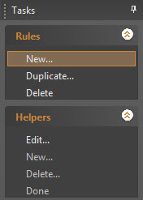
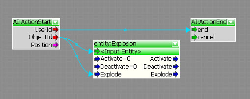
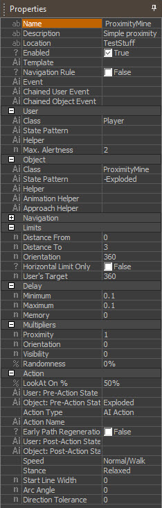
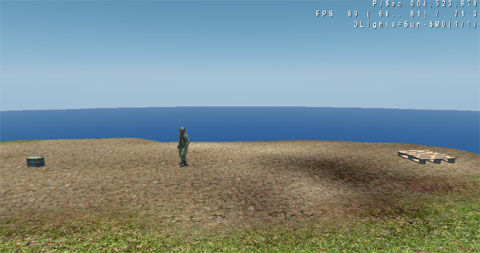
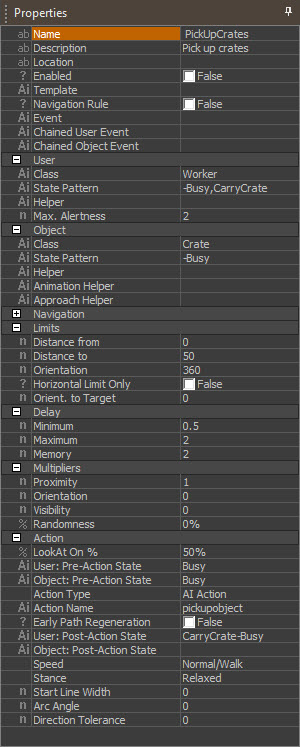
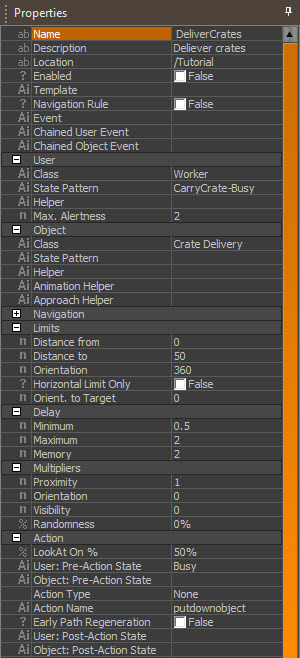

Overview
Sections
To create a new Smart Objects rule from scratch, only three things are needed:
- An idea
- Any level
- The checked out SmartObject library XML file
The Idea
Let's take something very simple for the beginning. A proximity mine is a good example, since it is very easy to create and needs only one action to work. The mine will explode whenever the player comes close.
This very simple behavior could of course be built by taking an explosion and trigger entity as well. But the advantage of using SmartObject in this case will become clear later on.
The Level
Although it is theoretically possible to create new rules without having any level open, all newly created rules should be tested at least once in a test level before checking them in. What level will be used for testing does not matter, it does not make any difference to the rule.
Remember that the level is not important for a SmartObject rule, it only depends on the SmartObject classes the entities have. Any rule will work in any level.
When you create a new rule, bear in mind that this rule must not destroy anything in any other level. Also, you should check that your new rule does not interfere with any other existing rules.
The File
The Smart Objects rules are not saved in the level file itself, but in an external XML library. The path of this library is: GameSDK/Libs/SmartDesign.Objects.xml
Getting Started
Create a test level or open any other level.
This tutorial uses an explosion entity to simulate the mine. Since the explosion entity class already has the options needed, it's a good choice. Place the explosion entity anywhere in the level right above the ground.
The explosion does not know that it has to explode when the player comes near it. For this functionality, you need to create a SmartObject rule for the explosion, in order to tell it when to explode.
To do that, open the Smart Objects editor with the 'View/Open View Pane/Smart Design.Objects Editor' button.
Create a new rule by selecting New from the Rules menu.

This rule is empty by default and will not do anything until it is set up manually. Go through the Properties window and set up the rule according to your needs.
Start at the top and make sure the rule is enabled and that it is not marked as a navigation rule (should be set like this by default). In the user category, select a class. The user of this rule will be the player, since the player "uses" the explosion entity. Click in the Class edit field to open the class selection menu and select 'Player' to make the Player the user. Leave the 'State Pattern' edit filed empty because it is not important which state the player is in when he gets blown up. The 'Max Alertness' value is also not important in this case because there is no such thing as an alertness level for the player.
Now you need to set up the object. Since you want to create something completely new, create a new SmartObject class for the object. Open the class selection window, click New and enter a class name ('ProximityMine' for example).
The New SmartObject Class
Close the class selection window and click in the State pattern edit field to create a new state pattern. To make sure the mine only explodes one time, create a new state for after the mine has exploded.
Click New to create a new state pattern. In the states overview window click New again to create a new state ('Exploded' for example).
The New 'Exploded' State
The 'Exploded' state must be added to the Exclude set.
- That means only if the state is NOT 'Exploded', the mine will be able to explode
- After that has happened, set the state to 'Exploded', which will prevent the mine from exploding again
Now, after the user and object are set up, set the limits of the rule. The limits define the distance between user and object; in this case that means how close the player has to get to the mine before it explodes.
Set the values to Distance from: 0, Distance to: 3, Orientation: 360 to make the trigger range 3m. You can always adjust these values later, if you feel the range is too big or small.
- Set the values in the 'Delay' category to Minimum: 0.1, Maximum 0.1 and Memory 0. This will make the mine go off almost immediately.
- Leave all values in the 'Multipliers' category untouched - the default values are fine for this easy example.
The last thing to set up is the action that will be executed when the rule is matched. Create a new action.
- Click in the 'Action Name' edit field to open the action selection window and then click new to create a new action ('explode' for example).
- Make sure to create that new action graph file in the
Libs\ActionGraphssub-folder (parallel to the GameData.pak file), otherwise it will not show up in the list! - If the
Libs\ActionGraphssub-folder does not exist, then you will have to create it. - The resulting folder structure should look like this:
- Make sure to create that new action graph file in the
GameSDK\
|
+- GameData.pak
|
+- Libs\
|
+- ActionGraphs\
|
+- explode.xml- Add the explosion entity to your action graph and link it to be triggered right away. Your action graph should like this:

Now, set the pre action state of the object to 'Exploded'.
- Go back to the Smart Objects Editor.
- Click the 'Object: Pre-Action' edit field and create a state pattern that includes the 'Exploded' state.
- Now, before the action itself starts, the state of the entity will be set to 'Exploded' which makes it impossible to trigger the rule a second time.
- Since a mine can only explode once, that is what you want. The next time the player comes close to this mine the SmartObject system will notice that the player is in range but when the state patterns are checked the object will not be valid because it has 'Exploded' in the exclude set of its state pattern.
- You do not need to set any post action states since the only state you want to set is already set before the action starts.
That's it, you have created a new rule. The properties window should look like this:

The rule itself is now complete. To successfully test the rule, set the SmartObject class to the explosion entity you already placed.
- Select the entity and click in the 'SmartObjectClass' edit field in the entity's properties menu.
- Select the 'ProximityMine' class that you created before.
- When you jump into game mode now and walk over the explosion it should explode, probably killing the default character. You can adjust the damage and the other parameters of the explosion in the entity's properties as usual.
As mentioned above the same behavior can be achieved by placing a proximity trigger about the explosion and wiring the 'Enter' event of the trigger to it. The advantages of using Smart Objects are:
- Fewer entities: Only the explosion entity is needed, no additional triggers.
- Flexibility: To make a minefield you simply need to clone the explosion and place it as often as you like
- Easy maintenance: To adjust the range of a mine for example, change it in the rule and it will be applied to all existing mines automatically.
- Central: Create the rule once in the Smart Objects editor and it will be available in every level in the whole game.
More Complex Examples
The above example is very easy and uses only one class, state and action. When you start building SmartObject behaviors for your level you will soon notice than in most cases more classes, states and actions are needed.
That is why the next example will a bit more complex and will use more classes and actions.
As in the above example you need three things: An Idea, a level to test it, and the checked out SmartObject library.
The Idea
Lets create a worker, a guy who carries stuff from one place to another. Such a guy could be used in the levels to unload a truck, move some ammo crates somewhere, etc...
The Level
As before, any level is sufficient for testing the Smart Objects.
The File
Don't forget to check out the library before starting work.
Getting Started
Before starting to implement complex behaviors, take a moment to think about what classes and actions are needed and in what way they have to interact with each other.
In this example you will define a carryable item (a box, ammo crate, etc.) a class, a worker class, and some spots to bring the items to.
The behavior you want to achieve is: If a worker is in range of a crate, he will pick it up and carry it to a predefined spot.
Lets prepare the level first. Load any level and place the following items:
- A grunt - (from Entity/AI/grunt)
- A BasicEntity - (from Entity/Phsics/BasicEntity)
- A second BasicEntity - (from Entity/Phsics/BasicEntity)
For the two BasicEntities, replace their models with the following two objects:
library/storage/crates/crates/palette_mplibrary/storage/crates/palette_box
It should look like this:

The worker, the crate to be carried, and a pallet as a destination
Now, create the following classes:
- Worker
- Crate
- CrateDelivery
Select the entity, click the SmartObjectClass property box, click 'New' in the popup dialogue box and enter the class name (i.e. 'Crate'). Then press OK.
Assign the guy the 'Worker' SmartObject class, the 'Crate' class to the box and the 'CrateDelivery' class to the pallet.
If you go into the game mode now, nothing will happen, because you have not yet defined a rule to tell the classes how to interact with each other. That is what you will do next. This time, one rule won't be enough to cover everything, you will need two rules:
- PickUpCrate - Approach a crate and pick it up
- DeliverCrate - Approach a delivery place for the crate and drop it
Open the Smart Objects editor and create a new rule (PickUpCrate).
The properties of the rule should look like this:

Rules for Picking Up a Crate
The rules say that whenever a...:
- 'Worker' is busy
and - is not carrying a crate ('-CarryCrate')
and - he is within the range of a crate ('Crate')
- which is free (not 'Busy ')
then - he will approach it and pick it up ('pickupobject').
As pre-action states, assign 'Busy' to the user and object. This makes sure that once the crate is on its way to being picked up, no other worker will try to pick it up.
As an action to execute, select 'pickupobject' (An already existing rule that will make a user pick up an object). Make sure your properties window looks exactly as in the screenshot above.
All you have to do now is to define another rule which tells every worker who is carrying a crate to bring it to a delivery place. The above rule left the user in the 'CarryCrate' state. The next rule will take that state as a requirement to execute the delivery action.
Create a new rule ('DeliverCrate') or duplicate and modify the first rule and set it up like this:

Rule for bringing a crate to a delivery place
This rule uses the worker as a user and the 'CrateDelivery' as an object. This class could be assigned to any entity; in this case it is a simple pallet.
Whenever a worker is carrying a crate he will now...:
- Search for a delivery place...
- Go there and...
- Drop the crate
As an action use 'putdownobject' which is an already existing action.
You can also build your custom action for this rule which uses additional animations and sounds.
After this action has ended, the worker will be idle again because you removed all of the important states in the post action condition. He will immediately start looking for another crate to carry after the action is finished.
Note that the 'Busy' state was not removed from the crate in the post action property. A single crate can now only be carried around once in the level, and this prevents the worker from carrying the same crates over and over again.
You can reset the state of the crates from time to time if a repeated behavior is wanted.
Combining Smart Objects with Static Flow Graphs
Combining SmartObject actions with static Flow Graphs is easy. A SmartObject rule could for example make an AI character go and use a specific class of machine using the 'AIUseObject' node.
In every level you can make different implementations of the machine itself using a static graph without any changes on the SmartObject rule itself.
Debugging Smart Objects
Features for debugging Smart Objects are still very limited at the moment. When working with Smart Objects make sure you always turn on:
ai_DebugDraw ai_DrawSmartObjects
Toggles the AI debugging view.
Usage: ai_DebugDraw [-1/0/1]
Default is 0 (minimal), value -1 will draw nothing, value 1 displays AI rays and targets
and enables the view for other AI debugging tools.
Draws smart object debug information.
Usage: ai_DrawSmartObjects [0/1]
Default is 0 (off). Set to 1 to draw the smart objects.
This will display the SmartObject classes and states of an entity, as well as the actions it is trying to execute.
Troubleshooting
Things to check if a SmartObject rule does not work:
- Do all entities have the right classes assigned?
- Is the state pattern logic of the rule set consequentially?
- Is the correct action set to execute?
- Is the navigation data up to date?
Tips and Tricks
Since the Flow Graph and the SmartObject system go hand in hand it is advisable to organize both in one window. A second monitor is mandatory for comfortable working because it can hold the SmartObject editor and the Flow Graph at the same time.